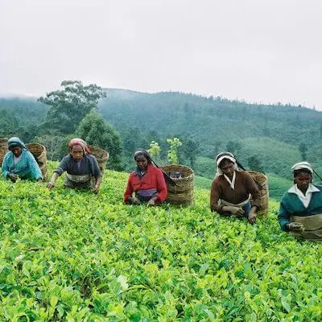

In 1852, James Taylor came to Ceylon, settling at the Loolecondera Farm, Galaha. In 1867, he started a 19-acre tea plantation on the Loolecondera Estate, setting the base for over a century of what would become Sri Lanka's largest export industry.
|
|
Tea production in Sri Lanka developed steadily during the 1880s, with planters from all over the hill country visiting Loolecondera to learn the fundamentals of tea cultivation and production. Commercial tea manufacturing has now become feasible with the advent of innovations such as the Sirocco tea dryer in 1877 and the tea-rolling system in 1880. 1877-1887 |
|
In 1891, Ceylon Tea was sold at a staggering price of LKR 36.15 per lb at London tea auctions. In 1892, the founder of the Ceylon tea industry, James Taylor, died at the age of 57. The Colombo Tea Traders Association was established in 1894, followed by the establishment of the Association of Colombo Tea Brokers in 1896. 1887-1897 |
This period witnessed a significant increase in production. By 1899, nearly 400,000 acres of land was already under tea cultivation. 1897-1907 |
|
1915 was a historic year as Mr. Thomas Amarasuriya was appointed as the first ever Sri Lankan Chairman of the Planters’ Association. 1907-1917 |

In 1925, the Institute of Tea Research was set up to develop processing processes and increase yields. As a consequence, by the end of this time, More than 100,000 metric tons of tea, mainly for export, was produced by Sri Lanka. 1917-1927 |
|
The Ceylon Tea Propaganda Board was founded in 1932. The world's largest tea bush was discovered in Ceylon in 1934, yielding four pounds of tea leaves a day. Ceylon became a founder member of the International Expansion Board for the Tea Industry (ITMEB) in 1935. 1927-1937 |
A breakthrough in the regulation of the leaf eating Tea Tortrix Caterpillar was made by the Tea Research Institute in 1940. This was achieved by purposely spreading a parasite imported from Java, Macrocentrus homonae. In 1941, the first Ceylonese tea brokerage company, M / s Pieris & Abeywardena, was founded.The Ceylon Estate Employers' Union was founded in 1944. 1937-1947 |
|
Import duty was imposed on tea in 1951. The planting of the first clonal tea fields started in 1955. In order to produce the best strains of tea, this is a way of regulating plant breeding. 1947-1957 |
In 1958, the State Plantations Company was established. An Ad Valorem Tax was levied on teas advertised at the Colombo auctions in 1959. The very first Instant Tea plant was set up in 1963 at Agarapathana by Halssen & Lyon of Germany. In 1965, Sri Lanka became the world's biggest tea exporter! The first International Tea Conference was held in 1966 to mark 100 years of Ceylon Tea. 1957-1967 |
|
In 1971-72, the Sri Lankan government nationalized and took over tea plantations that were privately owned. The Sri Lanka Tea Board, the Janatha Estate Development Board, and the Development Authority of Tea Small Holding were founded in 1976. The export of tea bags started this year, too. 1967-1977 |
At the Moscow Summer Olympic Games in 1980 and the Brisbane Commonwealth Games in 1982, Sri Lanka was the official provider of tea. Sri Lanka started importing tea in 1981 for blending and re-export. In 1982, the cultivation and export of green tea began. The tea processing system of CTC (Crush, break and curl) was introduced in the country in 1983. 1977-1987 |
|

An international conference in Colombo in 1992 was held to celebrate 125 years of Ceylon Tea. The Board of Tea Research was created. Export duty and Ad Valorem Fees have been repealed. State-owned tea plantations were returned to the private business in 1993. Sri Lanka 's tea exports crossed 250,000 metric tons in 1997. 1987-1997 |
The trade in Ceylon Tea based entirely on the Colombo Auction with the closing of the London Tea Auction in 1998. The Lion logo was internationally trademarked by the Sri Lanka Tea Board in 1999 as a symbol of 100% Pure Ceylon Tea. In 2000, Ceylon Tea 's production exceeded 300,000 metric tons. In 2001, in an old tea factory in Hanthana, Kandy, a Tea Museum was set up. 1997-2007 |
|
In 2008, the Ceylon Tea export revenue crossed USD 1 billion. In 2011,Sri Lanka has also been the first country to be identified as an Ozone-friendly tea manufacturer. The year 2017 marked Ceylon Tea's 150th year.James Taylor set up the first commercial plantation in 1867, now producing over USD 1 billion in export revenue and employing over 1 million people. 2007-2017 |